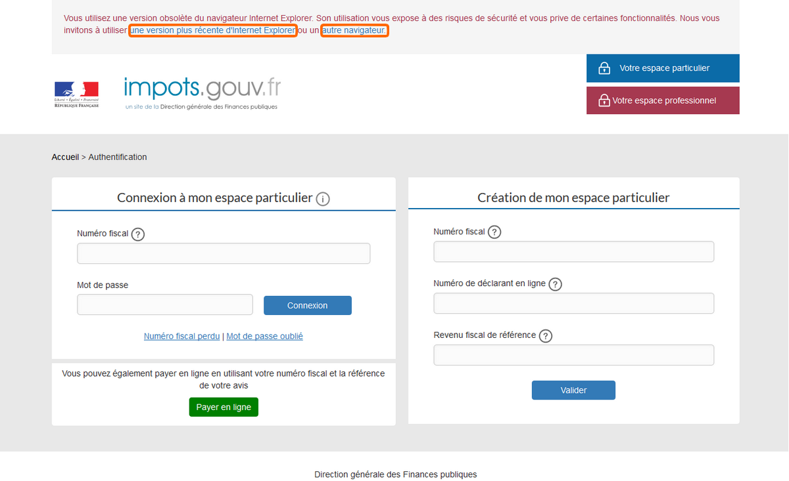

Si la version du navigateur Internet Explorer utilisée est obsolète, un bandeau en haut de la page invite l'usager à en utiliser une plus récente.
Deux sites sont proposés pour télécharger une version actualisée du navigateur.